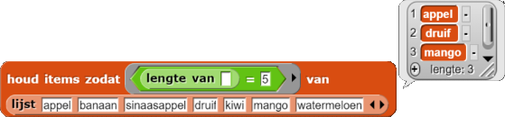

Houd items van lijsten
Op deze pagina, ga je predikaten gebruiken met het houd blok om items
binnen een lijst te houden die specifieke karakteristieken hebben.
Zoals je weet, kunnen predikaten gebruikt worden met voorwaardes om te beslissen wanneer iets
gedaan moet worden; ze kunnen ook gebruikt worden met het houd blok om te beslissen
welke dingen bewaard moeten worden. Het  blok
heeft als invoer een lijst en een predikaat, en het geeft een nieuwe lijst terug met alle items van de
lijst die aan de voorwaarde van het predikaat voldoen.
blok
heeft als invoer een lijst en een predikaat, en het geeft een nieuwe lijst terug met alle items van de
lijst die aan de voorwaarde van het predikaat voldoen.
De volgende expressie bijvoorbeeld vindt woorden van de woordenlijst waarvan de eerste
letter een 'v' is. Het lege invoervakje in het predikaat is waar elk item van de lijst
wordt neergezet om te controleren of dat item aan de voorwaarde voldoet.

Jij schrijft het predikaat dat zorgt voor het controleren en houd voert dit
predikaat uit op ieder item in de invoerlijst. Daarna rapporteert het de items die aan je predikaat
voldoen, in andere woorden de items die je predikaten waarmaken.
Let op dat het lege invoergedeelte in het predikaat noodzakelijk is wanneer je
houd gebruikt. Dit is waar het item van de lijst naartoe gaat elke keer wanneer er een
vraag wordt gesteld.
-

Exporteer je nieuwe predikaten (tussen?,deelbaar?,even?, en misschien ookheel getal?) van je project Hoofdstuk 2 Les 3 Pagina 1: Wat is een predikaat? en importeer deze dan naar je nieuwe project en sla dit op. Om te herhalen hoe je blokken importeert en exporteert, kun je kijken naar Hoofdstuk 2 Les 1 Pagina 4: Importeer Groet Speler in een ander programma. -
 Experimenteer met de voorbeelden
die al in het project staan. Bespreek en schrijf een uitleg op van wat deze blokken doen.
Experimenteer met de voorbeelden
die al in het project staan. Bespreek en schrijf een uitleg op van wat deze blokken doen.


- Voer het blok
initialiseer lijstenuit dat al in het project staat. Dit zorgt dat de globale variabelen woordenlijst en getallenlijst gevuld worden. Bouw dan nieuwe predikaten en gebruik je eerder gemaakte predikaten samen methoudom deze vragen te beantwoorden:- Hoeveel 12-letterige woorden zijn er in woordenlijst?
- Hoeveel 15-letterige woorden zijn er in woordenlijst?
- Hoeveel 17-letterige woorden zijn er in woordenlijst?
- Hoeveel items in de getallenlijst zijn:
- Even?
- Tussen de 25 en 75?
- Even getallen die groter zijn dan nul?
- Als je een
heel getal?predikaat hebt gemaakt, gebruik dan je nieuwe predikaten samen methoudom te kijken hoeven getallen in de getallenlijst:- hele getallen zijn,
- hele getallen tussen 25 en 75 zijn;
- geen hele getallen zijn;
- oneven hele getallen zijn;
keep itemsblok nog niet bestond. In plaats van het
houd items zodatblok dat nu speciaal voor deze les gemaakt is, kan je dus ook het
keep itemsblok gebruiken.
Het eerste voorbeeld houdt invoeren van een bepaalde lengte; van elk woord in de lijst wordt gevraagd of de lengte '5' is, en alleen degene met 5 tekens worden gerapporteerd. Het tweede voorbeeld houdt invoeren die geen getallen zijn; van elk item in deze lijst wordt gevraagd "Is dit item geen getal?" en alleen de elementen die geen getallen zijn worden gemeld.